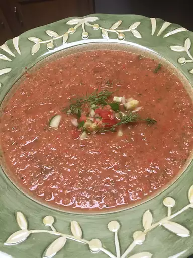

Dill Gazpacho

Description:
A fresh and mild gazpacho that takes advantage of all that summer has to offer. Super easy too. Garnish with a sprig of fresh dill and serve chilled.
Ingredients:
- 6 medium ripe tomatoes, finely chopped
- 2 cucumbers, peeled and finely chopped
- 1 onion, finely chopped
- ¼ cup chopped fresh dill
- 1 green bell pepper, finely chopped
- jalapeno pepper, seeded and minced
- 1 large lemon, juiced
- 1 tablespoon balsamic vinegar
- 2 teaspoons olive oil
- ½ teaspoon ground black pepper
- 1 teaspoon kosher salt
Steps:
- In a large bowl, stir together tomatoes, cucumber, onion, bell pepper, and jalapeno pepper. Season with lemon juice, balsamic vinegar, olive oil, salt and pepper.
- In a blender or food processor, puree half of the mixture until smooth. Return to bowl, stir in dill and mix well. Cover and chill for at least one hour before serving.
Back to home page